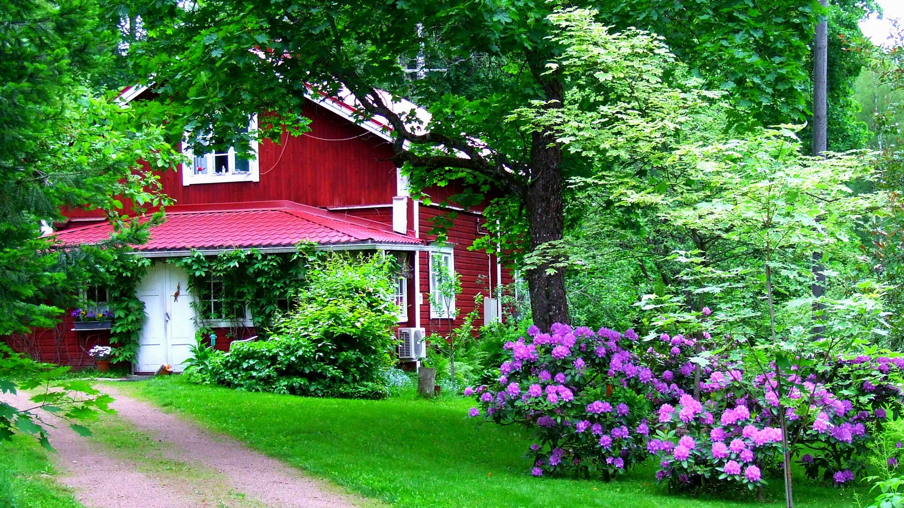

Wij zijn een hoveniersbedrijf met jarenlange ervaring op het gebied van tuinen en alles wat daarbij hoort.
We luisteren en denken actief met u mee, voor het optimale resultaat en zorgeloos tuinplezier.
Gecombineerd met kennis en vakmanschap op het gebied van ontwerpen, aanleggen en onderhoud, komen wij samen met u uit op uw droomtuin.
Vooraf komen we geheel vrijblijvend bij u langs om uw wensen in kaart te brengen en de mogelijkheden van de tuin te bekijken.

Renovatietuin
Rotterdam

Rustieke achtertuin
Leiden
Karakteristieke natuurtuin
Sint-Niklaas
Renovatieproject
Bilbao